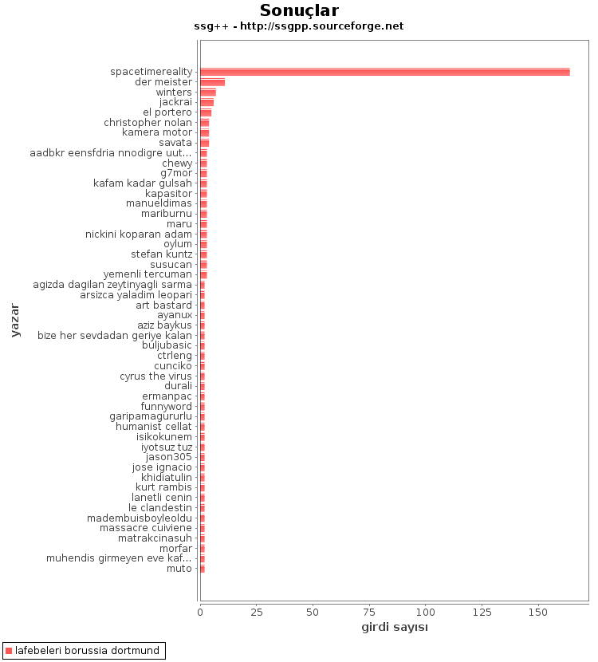

İş hattı kısayolları
İçindekiler
İş hattı kısayolları
ajanda
| Komut | ajanda |
| İşlevi | Bugün tarihli olayların başlıklarını yazar. |
| İşhattı kısayolu | hayvanknk [şey=%%BUGÜN%%] ! metinbtk |
| Argümanları | - |
Örnek:
$ ssg++ -l ajanda
Çıktısı:
+ 6-7 temmuz 2013 küresel onur yürüyüşü + 6 temmuz 2013 ajda pekkan konseri + 6 temmuz 2013 arctic monkeys istanbul konseri + 6 temmuz 2013 başörtü ve inanç özgürlüğü yürüyüşü + 6 temmuz 2013 başörtülü yürüyüşü + 6 temmuz 2013 başörtüsü yürüyüşü + 6 temmuz 2013 doğu türkistan'a destek eylemi + 6 temmuz 2013 fransa özbekistan u20 maçı + 6 temmuz 2013 gezi parkı buluşması + 6 temmuz 2013 gezi parki bulusmasi + 6 temmuz 2013 grup yorum konseri + 6 temmuz 2013 ispanya uruguay u20 maçı + 6 temmuz 2013 polis tacizine karşı yürüyüş + 6 temmuz 2013 sabine lisicki marion bartoli maçı + 6 temmuz 2013 taksim buluşması + 6 temmuz 2013 tekyumruk geziparki yürüyüşü
ajanda-1
| Komut | ajanda-1 |
| İşlevi | Dün tarihli olayların başlıklarını yazar. Dünün ajandası. |
| İşhattı kısayolu | hayvanknk [şey=%%DÜN%%] ! metinbtk |
| Argümanları | - |
ajanda3
| Komut | ajanda3 |
| İşlevi | Yarın, yarından sonra ve üç gün sonra tarihli olayların başlıklarını yazar. 3 günün ajandası. |
| İşhattı kısayolu | hayvanknk [şey=%%YARIN%%] & hayvanknk [şey=%%YARINDANSONRA%%] & hayvanknk [şey=%%BUGÜNARTI3%%] ! merge3x1 ! metinbtk |
| Argümanları | - |
anket
| Komut | anket |
| İşlevi | Argüman olarak verilen başlıktaki bkz veya görünmez bkz verilmiş başlıkları atıf sayılarına göre grafik olarak gösterir. |
| İşhattı kısayolu | başlıkknk [başlık=%s] ! başlıkgirdileri ! girdibkzları ! histogram ! grafikbtk |
| Argümanları | 1 |
Örnek:
Hangi filmi izlesem?
$ ssg++ anket sözlükçülerin en iyi 10 film listesi
Çıktısı:
ara
| Komut | ara |
| İşlevi | Argüman olarak verilen şekildeki başlıkları arar. Asteriks işareti (\*) ile aramalar yapılabilir. |
| İşhattı kısayolu | hayvanknk [şey=%s] ! metinbtk |
| Argümanları | 1 |
Örnek:
$ ssg++ -l ara saraband\*
Çıktısı:
+ bach si minör keman sonatı sarabande + dead lovers' sarabande face one + dead lovers' sarabande face two + dead lovers sarabande + dead lovers sarabande face one + dead lovers sarabande face two + handel's sarabande + saraband + sarabande + sarabande from violin sonata in b minor
badi
| Komut | badi |
| İşlevi | Badilere ait son girdileri yazar. |
| İşhattı kısayolu | badiknk ! başlıkgirdileri ! metinbtk |
| Argümanları | - |
başlıkindir
| Komut | başlıkindir |
| İşlevi | İlk argüman olarak verilen başlığın girdilerini ikinci argüman olarak verilen dosya ismi ve biçimiyle yazar. Geçerli uzantılar: xml, html ya da txt. |
| İşhattı kısayolu | başlıkknk [başlık=%s] ! başlıkgirdileri ! dosyabtk [dosya=%s] |
| Argümanları | 2 |
Örnek:
$ ssg++ başlıkindir sarabande, sarabande.txt
$ ssg++ başlıkindir sarabande, sarabande.xml
Bağlantı verilmiş resimlerin, twitter durum bildirimlerinin, bkz verilmiş girdilerin dahil edilmesi gibi gelişmiş özelliklerin olduğu bir e-kitap okuyucusu dökümanı için
$ ssg++ başlıkindir sarabande, sarabande.html $ ebook-convert sarabande.html sarabande.mobi # calibre ile gelen bir program $ send-to-kindle sarabande.mobi # kindle adresine dosya gönderen bir betik
başlıkresimleri
| Komut | başlıkresimleri |
| İşlevi | Argüman olarak verilen başlıktaki bkz verilmiş tüm resimleri indirir. |
| İşhattı kısayolu | başlıkknk [başlık=%s] ! başlıkgirdileri ! girdiresimlerigzc ! gnd |
| Argümanları | 1 |
Örnek:
charlize theron'un ne kadar güzel bir kadın olması?
$ ssg++ başlıkresimleri charlize theron $ ls charlize theron-18659736-charlize-theron-102809-3.jpg charlize theron-20123185-997DVA_Charlize_Theron_029.jpg charlize theron-20123185-Charlize%20Theron.jpg ...
bugün
| Komut | bugün |
| İşlevi | Bugüne ait son 50 başlığı yazar. |
| İşhattı kısayolu | hayvanknk [tarih=bugün, limit=50, sıralama=yeni-eski] ! metinbtk |
| Argümanları | - |
debe
| Komut | debe |
| İşlevi | Dünün en beğenilen girdilerini yazar. |
| İşhattı kısayolu | istatistikknk [tip=debe] ! başlıkgirdileri ! metinbtk |
| Argümanları | - |
Örnek:
Dünün en beğenilenlerini kindle'dan şundan bundan okumak:
$ ssg++ debe > debe-20130706.txt
ya da bağlantı verilmiş resimlerin, twitter durum bildirimlerinin, bkz verilmiş girdilerin ve güncel başlıklar için başlığın ilk girdisinin de eklenmesi gibi gelişmiş özelliklerin olduğu bir döküman için
$ ssg++ yürüt istatistikknk [tip=debe] ! başlıkgirdileri ! dosyabtk [dosya=debe-20130706.html] $ ebook-convert debe-20130706.html debe-20130706.mobi # calibre ile gelen bir program $ send-to-kindle debe-20130706.mobi # kindle adresine dosya gönderen bir betik
dosyadananket
| Komut | dosyadananket |
| İşlevi | Argüman olarak verilen dosyadaki girdiler için bkz veya görünmez bkz verilmiş başlıkları atıf sayılarına göre grafik olarak gösterir. |
| İşhattı kısayolu | dosyaknk [dosya=%s] ! girdibkzları ! histogram ! grafikbtk |
| Argümanları | 1 |
Örnek:
Sözlükçüler denize kim düşse denizi kurtarır (03.08.2013 itibariyle)?
$ ssg++ başlıkindir sözlükçülerin en antipatik 10 türk listesi, sözlükçülerin_en_antipatik_10_türk_listesi.xml $ ssg++ dosyadananket sözlükçülerin_en_antipatik_10_türk_listesi.xml
Çıktısı:
dosyadanlafebeleri
| Komut | dosyadanlafebeleri |
| İşlevi | Argüman olarak verilen dosyadaki bir başlığın girdileri için o başlığa yazmış yazarları girdi sayılarına göre grafik olarak gösterir. |
| İşhattı kısayolu | dosyaknk [dosya=%s] ! histogram [eksen=kategori, kategori=yazar] ! grafikbtk |
| Argümanları | 1 |
Örnek:
İtfaiye ile ilgili bir konuda kime danışmalı? Sözlükteki itfaiyeci kim? (İtfaiye kelimesinin geçtiği başlıklara en çok sayıda girdiyi kim yazmış?)
$ ssg++ -l yürüt hayvanknk [şey=itfaiye] ! başlıkgirdileri ! dosyabtk [dosya=itfaiye.xml]
$ ssg++ dosyadanlafebeleri itfaiye.xml
Çıktısı:
dosyadanzamansaleğilim
| Komut | dosyadanzamansaleğilim |
| İşlevi | Argüman olarak verilen dosyabtk ile oluşturulmuş XML dosyasındaki girdilerin sayılarını giriş zamanlarına göre argüman olarak verilen zaman çözünürlüğüyle (yıl, ay, hafta, gün, saat) grafik olarak gösterir. |
| İşhattı kısayolu | dosyaknk [dosya=%s] ! histogram [eksen=zaman, çözünürlük=%s] ! grafikbtk |
| Argümanları | 2 |
Örnek:
Hangi Lost bölümleri daha çok konuşulmuş? Lost'un popüleritesi nasıl değişmiş? Sezon finalleri ses getirmiş mi?
$ ssg++ -l başlıkindir lost, lost.xml $ ssg++ dosyadanzamansaleğilim lost.xml, hafta
Çıktısı:
dün
| Komut | dün |
| İşlevi | Düne ait son 50 başlığı yazar. |
| İşhattı kısayolu | hayvanknk [tarih=dün, limit=100, sıralama=yeni-eski] ! metinbtk |
| Argümanları | - |
farkbadi
| Komut | farkbadi |
| İşlevi | Bu komutun bir önceki çalıştırılmasından itibaren badiler tarafından yazılmış girdileri ekrana yazar. |
| İşhattı kısayolu | başlıkfarkknk [tip=badi, dosya=cache/checkpoint-badi.xml] ! başlıkgirdileri ! metinbtk |
| Argümanları | - |
fark
| Komut | fark |
| İşlevi | fark veya frak komutunun aynı gün içindeki bir önceki çalıştırılmasından itibaren girdi yazılmış başlıkları yeniden eskiye yeni girdi sayıları ile birlikte ekrana yazar. |
| İşhattı kısayolu | başlıkfarkknk [tip=bugün, limit=250] ! metinbtk |
| Argümanları | - |
frak
| Komut | frak |
| İşlevi | fark veya frak komutunun aynı gün içindeki bir önceki çalıştırılmasından itibaren girdi yazılmış başlıkları yeni girdi sayılarına göre sıralayarak ekrana yazar. |
| İşhattı kısayolu | başlıkfarkknk [tip=bugün, limit=250] ! genelsıralayıcı ! metinbtk |
| Argümanları | - |
fokur
| Komut | fokur |
| İşlevi | Fokurdayan başlıkları ekrana yazar. |
| İşhattı kısayolu | indeksknk [tip=fokur, limit=50, sayfa=1] ! metinbtk |
| Argümanları | - |
getir
| Komut | getir |
| İşlevi | Argüman olarak verilen başlık girdilerini getirir. başlık, başlık/@yazar, \#girdinumarası, başlık/\#girdinumarası biçimleri argüman olarak verilebilir. |
| İşhattı kısayolu | başlıkknk [başlık=%s] ! başlıkgirdileri ! metinbtk |
| Argümanları | 1 |
Örnek:
$ ssg++ getir hesap işletim ücretini geri almak
ghebe
| Komut | ghebe |
| İşlevi | Geçen haftanın en beğenilen girdilerini yazar. |
| İşhattı kısayolu | istatistikknk [tip=ghebe] ! başlıkgirdileri ! metinbtk |
| Argümanları | - |
ghebçe
Kullanımdan kalktı.
| Komut | ghebçe |
| İşlevi | Geçen haftanın en beğenilen çaylak girdilerini yazar. |
| İşhattı kısayolu | istatistikknk [tip=ghebçe] ! başlıkgirdileri ! metinbtk |
| Argümanları | - |
gündem
| Komut | gündem |
| İşlevi | Bugüne ait en çok girdi yazılmış 50 başlığı yazar. |
| İşhattı kısayolu | hayvanknk [tarih=bugün, limit=50, sıralama=gudik] ! metinbtk |
| Argümanları | - |
lafebeleri
| Komut | lafebeleri |
| İşlevi | Argüman olarak verilen başlığa yazmış yazarları girdi sayılarına göre grafik olarak gösterir. |
| İşhattı kısayolu | başlıkknk [başlık=%s] ! başlıkgirdileri ! histogram [eksen=kategori, kategori=yazar] ! grafikbtk |
| Argümanları | 1 |
Örnek:
Lewandowski Bayern Münih'e gidecek mi? Bunu kim bilir?
$ ssg++ lafebeleri borussia dortmund
Çıktısı:

maçskoru
| Komut | maçskoru |
| İşlevi | Argüman olarak verilen maç başlığındaki skor içeren cümleleri ekrana yazar. |
| İşhattı kısayolu | başlıkknk [başlık=%s] ! başlıkgirdileri ! maçsonucu ! metinbtk |
| Argümanları | 1 |
Örnek:
$ ssg++ maçskoru 24 temmuz 2013 bayern münih barcelona maçı
Çıktısı:
>> (...) ilk yarısı 1-0 bayern üstünlüğüyle biten maç. (...) >> (...) maç 1-1 biterse şaşırmam. (...) >> (...) `mario mandzukic` attı, 2-0 oldu. (...)
manşet
(bkz: gündem)
ortakbaşlıkları
| Komut | ortakbaşlıkları |
| İşlevi | Argüman olarak verilen iki yazarın ortak başlıklarını yeniden eskiye bulup yazar. |
| İşhattı kısayolu | hayvanknk [yazar=%s, sıralama=yeni-eski] & hayvanknk [yazar=%s, sıralama=yeni-eski] ! intersection ! metinbtk |
| Argümanları | 2 |
Örnek:
`sözlükteki evli çiftler` düğünlerinde "beraber yazdık biz bu başlıklarda" şarkısını çaldırmışlar mı? Ya da sözlükte mesaj yoluyla `selam güzel bayan` demeden önce seviyeli bir kafa denkliği testi yapmaya ne dersin?
$ ssg++ -l ortakbaşlıkları suser1, suser2
şaibeli
| Komut | şaibeli |
| İşlevi | şaibeli bir girdiyi ekrana yazar. |
| İşhattı kısayolu | cımbızknk [tip=şaibeli, adet=1] ! metinbtk |
| Argümanları | - |
şükela
| Komut | şükela |
| İşlevi | şükela bir girdiyi ekrana yazar. |
| İşhattı kısayolu | cımbızknk [tip=şükela, adet=1] ! metinbtk |
| Argümanları | - |
takip
| Komut | takip |
| İşlevi | takip.txt dosyasında belirtilen başlıklardan komutun son çalıştırıldığı zamandan beri yeni girdileri olanları yeni girdi sayıları ile birlikte yazar. |
| İşhattı kısayolu | takipknk ! metinbtk |
| Argümanları | - |
takip.txt dosyası ssg++ kullanıcı klasöründe (örn. Linux için: ~/.ssgpp/conf/) bulunur. Takip edilmek istenen başlıklar satır satır yazılmalıdır.
tsllbn
| Komut | tsllbn |
| İşlevi | Geçen haftanın tsllbn'nin formülü ile en beğenilen girdilerini yazar. |
| İşhattı kısayolu | istatistikknk [tip=tsllbn] ! başlıkgirdileri ! metinbtk |
| Argümanları | - |
yedekle
| Komut | yedekle |
| İşlevi | İlk argümanda verilen yazarın girdilerini ikinci argümanda verilen dosyaya yazar. |
| İşhattı kısayolu | hayvanknk [yazar=%s] ! başlıkgirdileri ! dosyabtk [dosya=%s] |
| Argümanları | 2 |
Örnek:
$ ssg++ -l yedekle suser1 suser1.txt
$ ssg++ -l yedekle suser2 suser2.xml
ya da resimleri vs. de dahil etmek için
$ ssg++ -l yedekle suser2 suser2.html
zamansaleğilim
| Komut | zamansaleğilim |
| İşlevi | Argüman olarak verilen başlığa yazılan girdi sayılarını argüman olarak verilen zaman çözünürlüğüne (yıl, ay, hafta, gün, saat) göre grafik olarak gösterir. |
| İşhattı kısayolu | başlıkknk [başlık=%s] ! başlıkgirdileri ! histogram [eksen=zaman, çözünürlük=%s] ! grafikbtk |
| Argümanları | 2 |
Örnek:
Geleneksel Mısır devrimleri kaç senede bir yapılır?
$ ssg++ zamansaleğilim mısır, ay
Çıktısı: